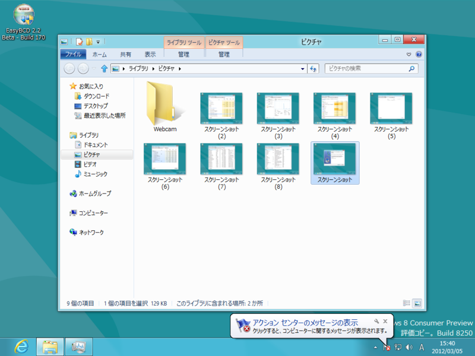

Windows 8 は［Windows］＋［PrintScreen］キーでデスクトップのスクリーンショットを“ピクチャー”フォルダに保存できる
公開日：

これは結構便利。デスクトップのスクリーンショットを、自動で連番をつけてファイルとして保存していける*1。ただ、
- 保存先は「ピクチャー」フォルダ決め打ち（ピクチャーフォルダがカオスになる）
- ファイル名は「スクリーンショット（連番）」決め打ち（タイムスタンプを名前に、などはできない）
- プライマリモニターしか撮影できない（あれ！）
など、イマイチなところもあるので、スクリーンショット系のサードパーティアプリが不要になるわけではないみたい。
これまでも［PrintScreen］キーなどでスクリーンショットを撮影してクリップボードへ転送することはできたが、ファイルとして保存するのは少し面倒だった*2。
なんかのアプリを使うと多少楽にはなるのだけど。